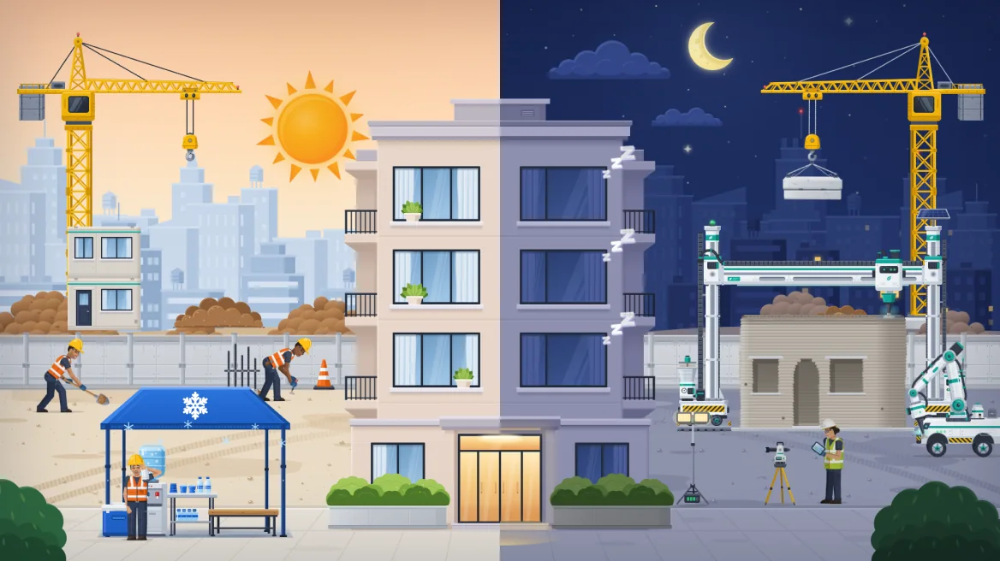
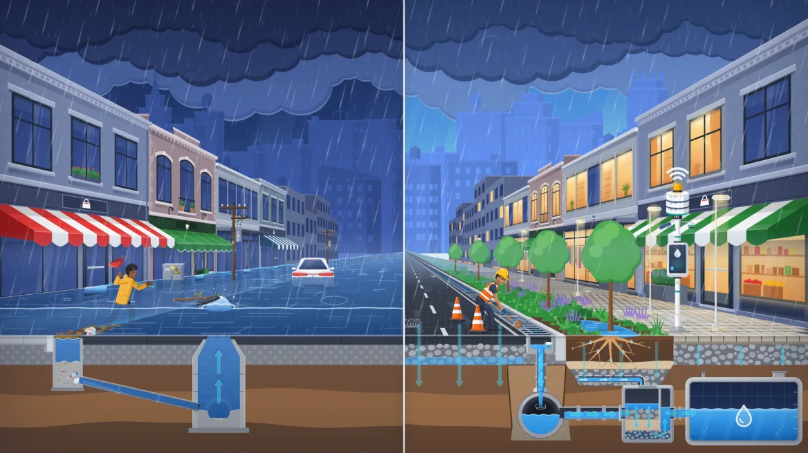
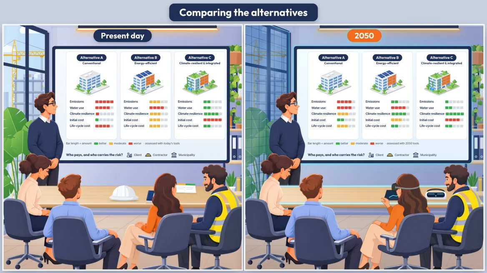
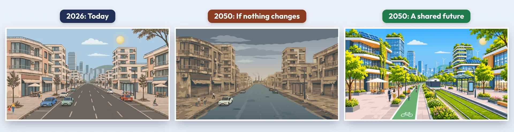

Bu sunumda yer alan görüş, bilgi ve ifadelerden, sunumun hazırlanmasından ve içeriğinden yalnızca ODTÜ sorumlu olup, sunum Yükseköğretim Kurulu’nun (YÖK) görüşlerini yansıtmaz ve Kurula herhangi bir sorumluluk yüklemez.
ODTÜ is solely responsible for the views, information and statements expressed in this presentation, as well as for its preparation and content. The presentation does not necessarily reflect the views of the Council of Higher Education of Türkiye (YÖK), nor does it imply any responsibility or liability on its part.